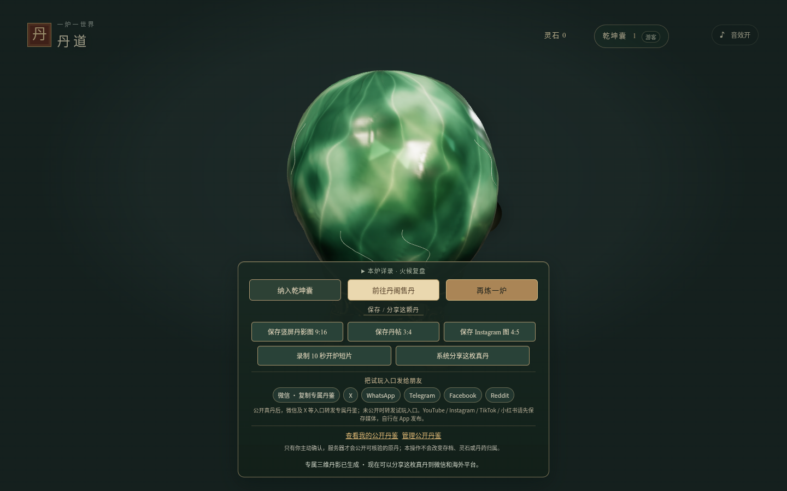
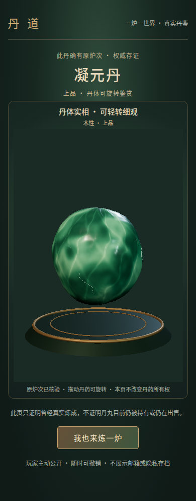

W147 · TRUE 3D MATERIAL · LOSSLESS OPTIMIZATION · REAL QA
丹皮更快生成。
细节，一点也不减少。
这次没有删除矿晶、弱化裂纹、缩小三维纹理，也没有用一张平面图片假装三维。我们找到相同丹丸矿物纹理被重复计算两次的问题，让真正的三维表层与透光矿晶共享已经计算出的噪声采样值。模型的几何和所有外观纹理逐字节保持一致。
−37%
8组丹性/品阶CPU材质构建合计耗时（单机测量）
40 / 40
十组原丹的四类纹理SHA-256全部一致
588 / 588
整仓单元测试通过，PG模式构建通过
真实测试范围：这37%只是分层丹衣在 Z890 上的CPU材质构建时间，不是线上云端完整封面或游戏 FPS 的提升。正式服目前运行 W146 神识版本；W147 已合并代码但没有由本轮切换生产发布槽。
真实实机 · 同一枚原丹


八组原丹材质构建实测
1746.5 ms
1100.1 ms
同一台 Z890、同一 Node/Three，不包含Chrome启动、软件下载、GPU/软件WebGL与PNG编码；数值是本次测量，绝不代表生产封面已缩短37%。
覆盖木、火、阴、金、水、土、毒、变等多种属性和品阶；十组外观真实纹理数据每一个字节都与优化前一致。浏览器还独立完成了自然七炉刻炼丹、真丹封面生成、社交链接解锁、本人撤销与经济存档不变的完整验证。
阅读 W147 代码与哈希证据 查看 W144/W145 正式生产真丹封面